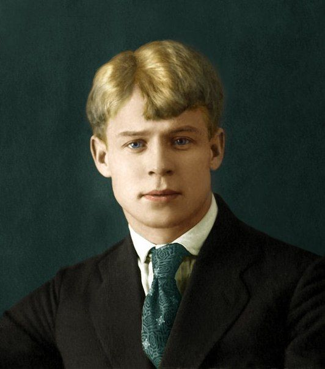

Краткая биография
Сергей Александрович Есенин — великий русский поэт, представитель новокрестьянской поэзии и лирики. Родился 3 октября 1895 года в селе Константиново Рязанской губернии.
В 1915 году переехал в Петроград, где познакомился с Блоком и другими поэтами. Славу ему принесли сборники «Радуница» и «Сельский часослов». Был женат на Айседоре Дункан, много путешествовал.
Творчество Есенина проникнуто любовью к родной земле, русской деревне. Умер в 1925 году в Ленинграде (гостиница «Англетер»).
Известные произведения
- Поэма «Анна Снегина»
- «Письмо матери»
- «Не жалею, не зову, не плачу...»
- «Берёза»